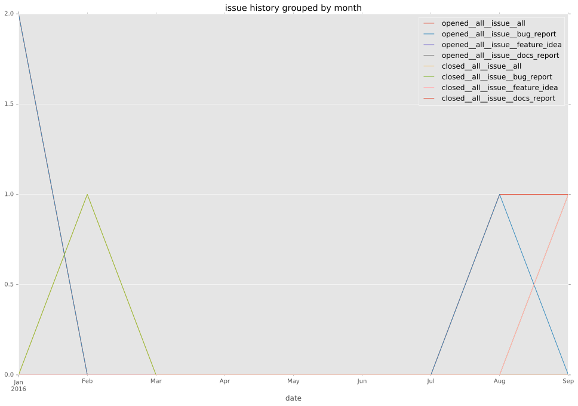

authors
- ramondelafuente
maintainers
- ramondelafuente
contributors
- ramondelafuente : 79 commits
- RobberPhex : 11 commits
- chris-l-weber : 3 commits
total issue counts
feature pull request: 1
pullrequest: 12
docs pull request: 1
bugfix pull request: 9
feature idea: 1
issue: 4
new plugin: 1
bug report: 3
issue history

pullrequest history
days open by issue type
bugfix pull request
count: 15
std: 4.82355332371
min: 0
max: 13
median: 4.0
mean: 5.86666666667
all
count: 20
std: 103.174048145
min: 0
max: 340
median: 3.5
mean: 38.6
pullrequest
count: 0
std: nan
min: nan
max: nan
median: nan
mean: nan
docs pull request
count: 1
std: nan
min: 3
max: 3
median: 3.0
mean: 3.0
feature pull request
count: 0
std: nan
min: nan
max: nan
median: nan
mean: nan
feature idea
count: 1
std: nan
min: 0
max: 0
median: 0.0
mean: 0.0
issue
count: 0
std: nan
min: nan
max: nan
median: nan
mean: nan
new plugin
count: 2
std: 0.0
min: 340
max: 340
median: 340.0
mean: 340.0
bug report
count: 1
std: nan
min: 1
max: 1
median: 1.0
mean: 1.0
closures grouped by total days open